The Western Allies · stage 6 of 13 · 1943
As the Western Allies: Operation Vulcan
The Axis armies in Africa are penned into the north-east corner of Tunisia with their backs to the sea, and the Allied navies have closed it. Two hundred and fifty thousand men are waiting to be destroyed or to surrender. The Americans will drive on Mateur and Bizerte; the British will break through at Medjez el Bab for Tunis, and the Eighth Army will push up the coast from Enfidaville. Finish it.
- Date
- 22 April 1943
- Turns
- 12 (decisive by turn 9)
- You command
- British, American and French forces, 19 units and 2 attached
- Against
- German and Italian forces, 17 units
- To win
- Take all 4 objectives by the end of turn 12; take them by turn 9 for a decisive victory.
- Objectives
- Tunis, Bizerte, Mateur and Enfidaville
- Weather
- Clear
- Reinforcements
- 0 for you, 1 for the enemy, arriving during the battle
- In a match
- Allied side Favoured, Axis side a Challenge
Your forces 21 units
 M4 ShermanArmour×2
M4 ShermanArmour×2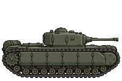
ChurchillArmour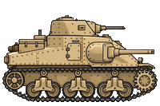
GrantArmour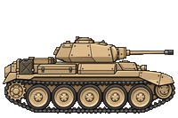
CrusaderArmour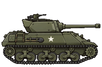
M10Anti-tank and assault guns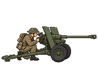
6-pounderAnti-tank and assault guns Infantry '43Infantry×4
Infantry '43Infantry×4 US InfantryInfantry×2
US InfantryInfantry×2 AirborneInfantry
AirborneInfantry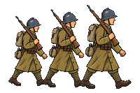
InfanterieInfantry 25-pounderArtillery×2
25-pounderArtillery×2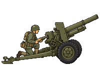
Field ArtilleryArtillery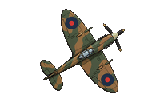
SpitfireFighters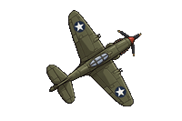
P-40 WarhawkFighters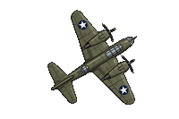
A-20 HavocGround-attack aircraft
The enemy 17 units
 Panzer IVArmour×2
Panzer IVArmour×2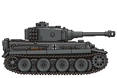
Tiger IArmour 88mm FlaKAnti-tank and assault guns×2
88mm FlaKAnti-tank and assault guns×2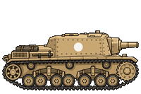
Semovente 75/18Anti-tank and assault guns StuG IIIAnti-tank and assault guns
StuG IIIAnti-tank and assault guns GrenadiereInfantry×4
GrenadiereInfantry×4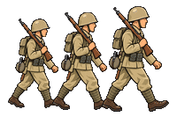
FanteriaInfantry×2 HummelArtillery
HummelArtillery NebelwerferArtillery
NebelwerferArtillery Fw 190Fighters
Fw 190Fighters Ju 87 StukaGround-attack aircraft
Ju 87 StukaGround-attack aircraft
In the campaign. It follows The Second Battle of El Alamein or The Battle of Kasserine Pass. Whatever the result, the campaign goes on to The Invasion of Sicily.